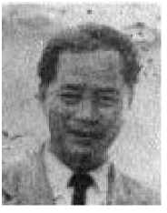

NHỮNG MẨU ĐỜI (4)
Nguyễn Văn Lịnh (1909-1951)

Sinh tại Bến Súc (Thủ Dầu Một), Nguyễn Văn Lịnh sang Pháp năm 1926, học Trung Học-Lycée Michelet ở Vannes, rồi theo khoa Văn tại Đại Học Sorbonne Paris. Cùng Trần Văn Sĩ, anh khởi xướng nhóm cộng sản Tả phái Đông Dương tại Pháp từ 1931.
Trở về Nam Kỳ vào đầu cuộc chiến tranh, anh dạy học trường tư tại Cần Thơ. Anh gia nhập Liên minh cộng sản Quốc tế chủ nghĩa ở Sài Gòn tháng 8 năm 1945, phụ trách huấn luyện chính trị công nhân xe điện Gò Vấp và giữ liên lạc giữa các chiến hữu ở bưng biền và thành phố.
Tháng giêng năm 1950, ba người lãnh đạo Liên minh cộng sản Trung Hoa (vào năm 1948 nhóm ấy có 380 đảng viên công nhân và sinh viên) là Peng Shuzi cùng vợ là Cheng Bilan, và Liu Jialang đến gặp anh em ở Sài Gòn. Vài tháng sau, họ cùng Nguyễn Văn Lịnh và Liu Khánh Thịnh được người mời tới tham dự một cuộc họp bí mật tại một vùng quân quản của Việt Minh ở Biên Hòa để thảo luận vấn đề phái Đệ Tứ tham gia kháng chiến. Lịnh, Thịnh và Liu Jialang bị sa bẫy ngày 13 tháng 5.1950. Họ mất tích từ ấy. Một thời gian sau đài truyền thanh bưng biền của Việt Minh truyền báo kết tội họ là ‘’tay sai của đế quốc Pháp’’.
Trần Đình Minh, tự Nguyễn Hải Âu
(1912-1946)
Thi Sĩ Nguyễn Hải Âu là tác giả cuốn tiểu thuyết nói về một người con gái nghèo, xấu và câm và khi được yêu thì nói được và nở sắc đẹp. Có lẽ là biểu tượng cho những kẻ nô lệ được sống một cuộc đời đích thực nhờ ở cuộc cách mạng xã hội. Anh cũng viết về kinh tế: Kinh tế học phổ thông (Hà Nội, 1944), Kinh tế thế giới 1929-1934 (Hà Nội, 1945). Anh đã bỏ nghề dạy học để làm thợ in tại nhà in Lê Văn Tân ở Hà Nội, nơi in tờ báo bí mật Cờ Đỏ năm 1944-1945. Anh đến Sài Gòn vào tháng 7 năm 1945, chung hoạt động cùng các đồng chí ở đây. Được đoàn công binh xưởng xe điện Gò Vấp cử ra lãnh đạo cùng với Nguyễn Văn Thương trong cuộc khởi nghĩa ở Sài Gòn hồi tháng 9.1945. Anh chết tại mặt trận Mỹ Lợi gần Cao Lãnh (Sađéc) ngày 13 tháng giêng 1946, dưới làn đạn của đội quân bổ xung bản xứ trong quân đội Pháp giả trang làm du kích. Dân làng Mỹ Tây đã xây cho anh một ngôi mộ.
Lương Đức Thiệp ( - 1945)
Người quê ở Thanh Hóa, đã sáng lập Đảng thợ thuyền xã hội Việt Bắc và xuất bản tờ Chiến Đấu, có Tạ Thu Thâu cộng sự năm 1945 lúc Thâu ngụ ở Bắc Kỳ. Anh bị đuổi khỏi Trường Careau thành chung Nam Định sau cuộc bãi khóa phản đối giáo sư Tây ‘’Paul mũi đỏ’’ lão chửi học trò đồ đểu, con lợn, giống An Nam bẩn thỉu. Mùa Thu năm 1930, Lương Đức Thiệp toan trốn đi ngoại quốc. Anh bị bắt tại Bangkok, điệu về Thanh Hóa, sau một năm tù, anh bị quản thúc tại quê quán.
Anh bị đao thủ của Hồ chí Minh ám sát năm 1945, Nhà Văn Tô Hoài khêu gợi trong quyển hồi ký Cát bụi chân ai (Californie, 1993).
Lê Quang Lương tự Bích Khê
(1915-1946)
Thầy giáo vừa là nhà thi sĩ dân mến, người quê Thu Xà (Tư Nghĩa, Quảng Nam). Cha có chân trong Phong Trào Đông Du. Anh đã dịch quyển Retour de l'URSS (Đi Liên Sô về) của André Gide. Anh chết năm 1945, sau đó dân chúng vì mến trọng anh nên họ đặt tên con đường từ bến xe đò đến cửa thành phía Đông là đường Bích Khê, mặc dầu trong địa đồ chính thức Thành Quảng Ngãi không có tên con đường ấy.
Mộ anh bị bỏ hoang, đầy cỏ rậm, như anh đã tiên cảm trong mấy vần thơ trong bài Nấm Mồ:
Đầy cỏ xanh xao mấy lớp phủ,
Trên mồ con quạ đứng yêm hơi.
Năm 1991, gia đình muốn di táng anh về Thu Xà sinh quán của anh. Tên Bốn, thơ ký ủy ban nhân dân làng, không cho phép, đưa ra những lẽ này: Anh chết vì bệnh lao, hài cốt có thể sang độc trong làng; ngoài ra anh là, "Trótkisme ‘’theo các nhà cách mạng trưởng thành, chủ nghĩa Trotskisme thực là phản động’’ (Trần Đang điều tra, đăng trong báo Lao Động, báo Tổng công đoàn lao động Việt Nam ngày 20.1.1994).

Edgar Ganofsky
(1880-1943)
Người Pháp, gốc ở Đảo Réunion, là một giáo viên bị thải hồi vì chính trị, luôn luôn chống đối chính quyền (xem tờ báo của ông La voix libre {Tiếng nói tự do}1923-1932), một người xu hướng chủ nghĩa tự do tuyệt đối, sống thanh đạm theo lối người An Nam trong một căn phố nghèo ở Đakao. Toàn tâm toàn ý chống thực dân chủ nghĩa, ông nhận làm quản lý công không cho báo La Lutte. Vào năm 1939, ký tên quản lý tờ Tia Sáng, ông bị kết án 1 năm tù và 5 năm biệt xứ hồi tháng 9.1939. Qua tháng 6.1940 án của ông đổi thành 3 năm tù và 10 năm biệt xứ, bị quản thúc ở Cần Thơ, ông chết trong tình trạng khốn cùng năm 1943.